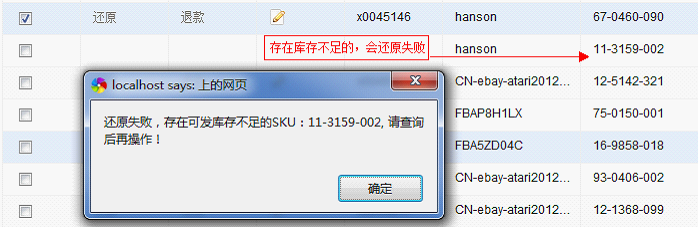
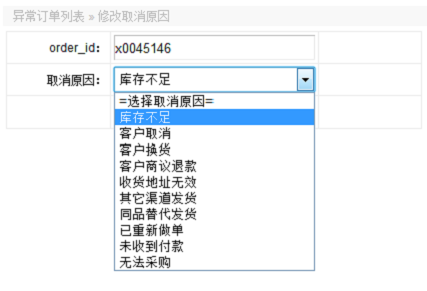
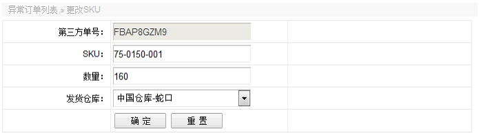
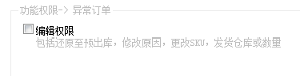

销售客服录单到EPR的过程中，系统识别到“库存不足”的会被搁置到“异常订单”，进入到“异常订单”之后的订单，可以改变订单的状况，归纳起来有以下几种情况。
1、还原：可以将订单还原至预出库，让物流正常发货，但是系统只可以还原“库存不足”和“未收以付款”的订单，还原操作过程中，系统会判断库存，订单里面的所有记录库存充足才会成功还原，否则还原失败。

2、修改取消原因：点击编辑图标，可以修改该订单的取消原因，有如下几种原因选择。

3、退款：若客人要求退款，取消本订单，可以在异常中制作退款单，退款具体操作会在出库订单中详解。
4、修改订单信息：在异常订单中，点击第三方单号，可以修改SKU(当这个颜色库存不足，客人同意换另外一个SKU)、数量(当客人同意减少购买数量)、发货仓库(如A仓没货，从B仓发货)。

其次，搜索一个订单是否在异常订单，可以通过物品的SKU,客人的ID,订单号，我们自己编制的第三方单号等途径。
最后附上异常的权限管理，只有一个，如下图：
